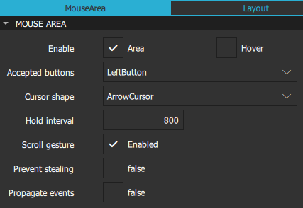
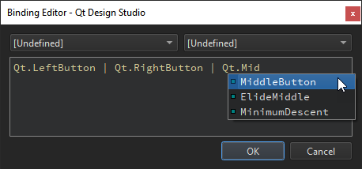
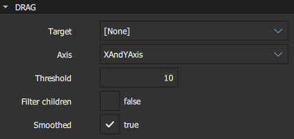
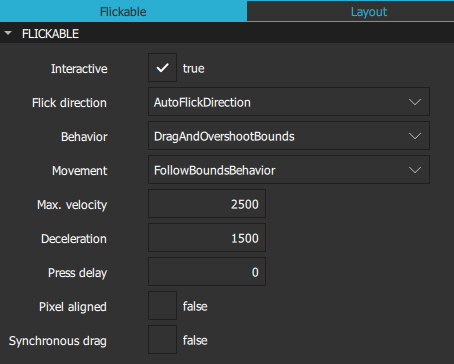
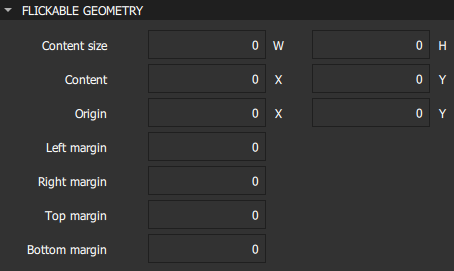
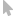

User Interaction Methods
You can create instances of preset basic components to add interaction methods to UIs, such as performing actions by using a pointing device or the keyboard, or flicking the visible area of the screen horizontally or vertically. They are availabe in Components > Default Components > Basic.
In addition, you can create instances of preset UI Controls to inform users about the progress of the application or to gather input from users.
The following basic components are available for user interaction:
You can specify values for the properties of component instances in the Properties view.
Mouse Area
Signals and handlers are used to deliver mouse interactions. Specifically, you can use a Mouse Area component to define JavaScript callbacks (also called signal handlers), which accept mouse events within a defined area.
A mouse area receives events within a defined area. One quick way to define this area is to anchor the mouse area to its parent's area. If the parent is a Rectangle (or any component that is derived from an Item), the mouse area will fill the area defined by the parent's dimensions. Alternatively, you can define an area smaller or larger than the parent. Several controls, such as buttons, contain a mouse area.
A mouse area emits signals in response to different mouse events:
canceled()clicked()doubleClicked()entered()exited()positionChanged()pressAndHold()pressed()released()
Mouse Area Properties
A Mouse Area is an invisible component that is typically used in conjunction with a visible component in order to provide mouse handling for that component. By effectively acting as a proxy, the logic for mouse handling can be contained within a Mouse Area component.
Select the Enable check box to enable mouse handling for the proxied component. When disabled, the mouse area becomes transparent to mouse events.

By default, Mouse Area components only report mouse clicks and not changes to the position of the mouse cursor. Select the Hover check box to ensure that the appropriate handlers are used and the values of other properties are updated as necessary even when no mouse buttons are pressed.
Even though Mouse Area is an invisible component, it has a Visible property. Deselect the Visible check box in the Visibility section to make the mouse area transparent to mouse events.
In the Accepted buttons field, select the mouse button that the mouse area reacts to. Select AllButtons to have the mouse area react to all mouse buttons. You can add support for several buttons in the Code view or Binding Editor by combining the values with the OR operator (|). For more information about the available values, see the developer documentation for acceptedButtons.

In the Cursor shape field, select the cursor shape for this mouse area. On platforms that do not display a mouse cursor, this value may have no effect.
In the Hold interval field, specify a value to override the elapsed time in milliseconds before the pressAndHold() signal is emitted. If you do not explicitly set the value or it is reset, it follows the globally set application style hint. Set this value if you need particular intervals for particular Mouse Area instances.
Select the Scroll gesture check box to respond to scroll gestures from non-mouse devices, such as the 2-finger flick gesture on a trackpad. If the check box is not selected, the wheel signal is emitted only when the wheel event comes from an actual mouse with a wheel, while scroll gesture events will pass through to any other component that will handle them. For example, the user might perform a flick gesture while the cursor is over a component containing a Mouse Area instance, intending to interact with a Flickable component which is underneath. Setting this property to false will allow the PinchArea component to handle the mouse wheel or the pinch gesture, while the Flickable handles the flick gesture.
Information about the mouse position and button clicks are provided via signals for which event handler properties are defined. If a mouse area overlaps with the area of other instances of the Mouse Area components, you can propagate clicked(), doubleClicked(), and pressAndHold() events to these other components by selecting the Propagate events check box. Each event is propagated to the next enabled Mouse Area beneath it in the stacking order, propagating down this visual hierarchy until a Mouse Area accepts the event.
Advanced Mouse Area Properties
You can place a Mouse Area instance within a component that filters child mouse events, such as Flickable. However, the mouse events might get stolen from the Mouse Area if a gesture, such as a flick, is recognized by the parent component.
Select the Prevent stealing check box to stop mouse events from being stolen from the Mouse Area instance. This value will take no effect until the next press() event if it is set once a component has started stealing events.
For more information, see the developer documentation for the Mouse Area component.
Drag Properties
You can specify properties for dragging components in the Drag section. Select the component to drag in the Target field. Keep in mind that anchored components cannot be dragged.

In the Axis field, specify whether dragging can be done horizontally, vertically, or both.
In the Threshold field, set the threshold in pixels of when the drag operation should start. By default, this value is bound to a platform dependent value.
Select the Filter children check box to enable dragging to override descendant Mouse Area instances. This enables a parent Mouse Area instance to handle drags, for example, while the descendant areas handle clicks.
Select the Smoothed check box to move the target component only after the drag operation has started. If this check box is not selected, the target component is moved straight to the current mouse position.
Focus Scope
When a key is pressed or released, a key event is generated and delivered to the focused component. If no component has active focus, the key event is ignored. If the component with active focus accepts the key event, propagation stops. Otherwise the event is sent to the component's parent until the event is accepted, or the root component is reached and the event is ignored.
A component has focus when the Focus property in the Advanced section is set to true. However, for reusable or imported components, this is not sufficient, and you should use a Focus Scope component.
Within each focus scope, one object may have focus enabled. If more than one component have it enabled, the last component to enable it will have the focus and the others are unset, similarly to when there are no focus scopes.
When a focus scope receives active focus, the contained component with focus set (if any) also gets the active focus. If this component is also a focus scope, both the focus scope and the sub-focused component will have active focus.
The Focus Scope component is not a visual component and therefore the properties of its children need to be exposed to the parent component of the focus scope. Layouts and positioners will use these visual and styling properties to create the layout.
For more information, see Keyboard Focus in Qt Quick.
Flickable
Flickable places its children on a surface that can be dragged and flicked, causing the view onto the child components to scroll. This behavior forms the basis of components that are designed to show large numbers of child components, such as List View and Grid View. For more information, see List and Grid Views.
In traditional user interfaces, views can be scrolled using standard controls, such as scroll bars and arrow buttons. In some situations, it is also possible to drag the view directly by pressing and holding a mouse button while moving the cursor. In touch-based user interfaces, this dragging action is often complemented with a flicking action, where scrolling continues after the user has stopped touching the view.
The contents of a Flickable component are not automatically clipped. If the component is not used as a full-screen component, consider selecting the Clip check box in the Visibility section.

Users can interact with a flickable component if the Interactive check box is set to true. Set it to false to temporarily disable flicking. This enables special interaction with the component's children. For example, you might want to freeze a flickable map while scrolling through a pop-up that is a child of the Flickable component.
The Flick direction field determines whether the view can be flicked horizontally or vertically. Select AutoFlickDirection to enable flicking vertically if the content height is not equal to height of the flickable and horizontally if the content width is not equal to the width of the flickable. Select AutoFlickIfNeeded if the content height or width is greater than that of the flickable.
Specify the maximum velocity for flicking the view in pixels per second in the Max. velocity field. Specify the rate at which a flick will decelerate in the Deceleration field.
The value of the Movement field determines whether the flickable will give a feeling that the edges of the view are soft, rather than a hard physical boundary. Select StopAtBounds for custom edge effects where the contents do not follow drags or flicks beyond the bounds of the flickable. Select FollowBoundsBehavior to have the contents follow drags or flicks beyond the bounds of the flickable depending on the value of the Behavior field.
In the Press delay field, specify the time in milliseconds to delay delivering a press to children of a flickable. This can be useful when reacting to a press before a flicking action has undesirable effects. If the flickable is dragged or flicked before the delay times out, the press event will not be delivered. If the button is released within the timeout, both the press and release will be delivered.
Note: For nested flickables with press delay set, the press delay of outer flickables is overridden by the innermost flickable. If the drag exceeds the platform drag threshold, the press event will be delivered regardless of this property.
The Pixel aligned check box sets the unit of alignment set in the Content X and Y fields to pixels (true) or subpixels (false). Set it to true to optimize for still content or moving content with high constrast edges, such as one-pixel-wide lines, text, or vector graphics. Set it to false when optimizing for animation quality.
If Synchronous drag is set to true, then when the mouse or touchpoint moves far enough to begin dragging the content, the content will jump, so that the content pixel which was under the cursor or touchpoint when pressed remains under that point. The default is false, which provides a smoother experience (no jump) at the cost of losing some of the drag distance at the beginning.
Flickable Geometry
The Content size field specifies the dimensions of the surface controlled by a flickable. Typically, set the values of the W and H fields to the combined size of the components placed in the flickable. You can set additional margins around the content in the Left margin, Right margin, Top margin, and Bottom margin fields.

The Origin field specifies the origin of the content. It refers to the top-left position of the content regardless of layout direction. Usually, the X and Y values are set to 0. However, a List View and Grid View may have an arbitrary origin due to delegate size variation, or component insertion or removal outside the visible region.
Summary of Basic Interaction Methods
The following table lists the components that you can use to add basic interaction methods to UIs with links to their developer documentation. They are availabe in Components > Default Components > Basic. The MCU column indicates which components are supported on MCUs.
| Icon | Name | MCU | Purpose |
|---|---|---|---|
| Flickable |  | Enables flicking components horizontally or vertically. | |
| Focus Scope | Assists in keyboard focus handling when building reusable components. | ||
|  | Mouse Area | | Enables simple mouse handling. |